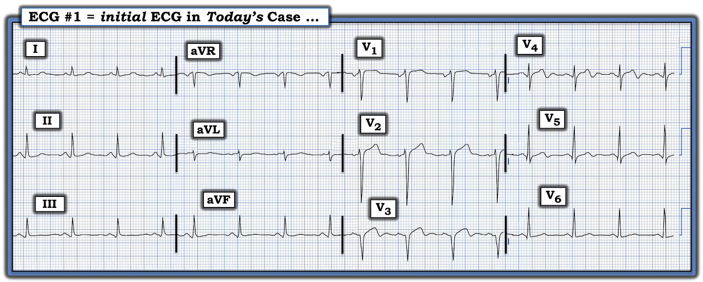
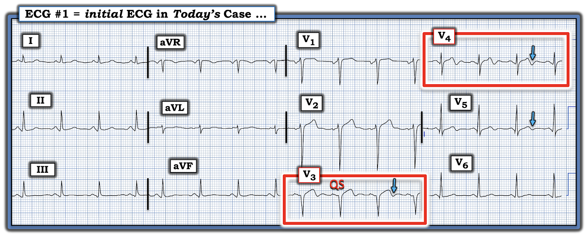
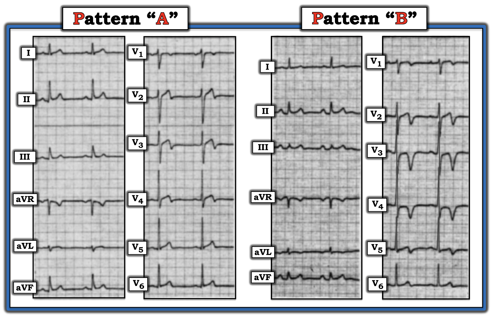
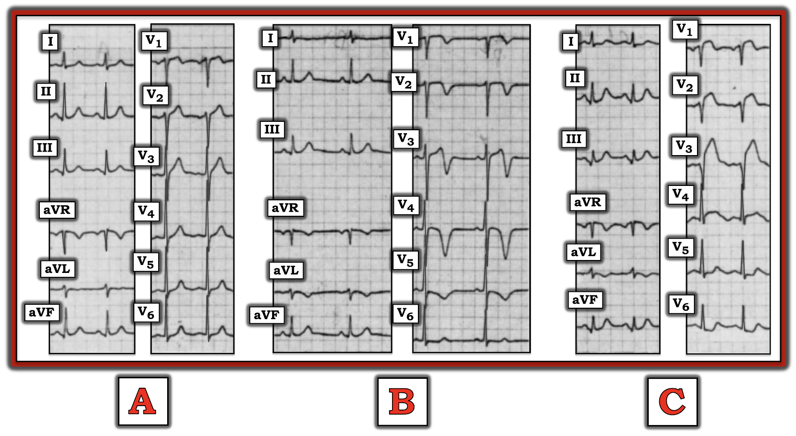

ECG Blog #453 — Đây có phải hội chứng Wellens?
Điện tâm đồ ở Hình-1 được ghi từ một người đàn ông trung niên đến khám vì CP (đau ngực — Chest Pain) khi gắng sức, tăng dần trong 2 tuần. Cơn CP nặng nhất của ông xảy ra một ngày trước khi ông được ghi điện tâm đồ này. Cơn CP của ông đã giảm nhiều so với hôm trước — nhưng vẫn chưa hết hoàn toàn.
- Xét nghiệm Troponin ban đầu lấy chưa đầy 1 giờ sau khi ghi điện tâm đồ ở Hình-1 cho kết quả trên 10,000.
CÂU HỎI:
- Với bệnh sử này — BẠN sẽ đọc điện tâm đồ này như thế nào?
- Đây có phải là hội chứng Wellens’ không?


SUY NGHĨ CỦA TÔI về ca bệnh hôm nay:
Nhịp của điện tâm đồ ở Hình-1 là nhịp xoang ~85/phút. Khoảng PR và thời gian QRS bình thường; QTc có vẻ kéo dài ở mức giới hạn (khi tính cả phần âm cuối của sóng T ở V3,V4). Không có lớn buồng tim.
Về Thay đổi sóng Q-R-S-T:
- Có các sóng q nhỏ ở từng chuyển đạo thành dưới. Sóng q ở chuyển đạo III hơi rộng hơn so với một sóng q vách bình thường — nên tôi không chắc các sóng q thành dưới này có ý nghĩa lâm sàng hay không.
- Dù vậy — có một phức bộ QS rõ ràng ở chuyển đạo V3 (Xem Hình-2). Phức bộ QS này càng có thêm ý nghĩa vì có mất sóng r từ chuyển đạo V2 sang V3. Do có QS ở V3 — tôi cho rằng sóng Q nhỏ ở chuyển đạo V4 cũng có ý nghĩa.
- Các sóng q nhỏ và hẹp chưa rõ ý nghĩa thấy ở các chuyển đạo ngực bên V5 và V6.
- Tăng tiến sóng R bị chậm do mất các lực hướng ra trước ở chuyển đạo V3 và V4.
Về Thay đổi sóng ST-T:
- Có ST thẳng đuỗn kèm ST chênh lên nhẹ ở chuyển đạo V2.
- Đoạn khởi đầu ST ở chuyển đạo V3 hơi chênh lên và có hình vòm — kèm đoạn đi xuống dốc đứng vào phần âm cuối của sóng T (mũi tên XANH ở chuyển đạo này trong Hình-2).
- Hình ảnh ST thẳng đuỗn tương tự kèm phần cuối sóng T âm tiếp tục thấy ở chuyển đạo V4, và ở mức độ ít hơn ở chuyển đạo V5 (các mũi tên xanh ở những chuyển đạo này).
- Có sóng ST-T dẹt không đặc hiệu ở chuyển đạo V6 — và ở các chuyển đạo chi.
Nhận định của tôi về điện tâm đồ #1 với bệnh sử hôm nay:
Ở người đàn ông trung niên này có bệnh sử 2 tuần CP — với cơn nặng nhất xảy ra một ngày trước khi ghi điện tâm đồ #1 — và CP đã giảm (nhưng chưa hết hoàn toàn) vào lúc ghi điện tâm đồ này — bản ghi này gợi ý đã có nhồi máu thành trước.
- "Mắt" tôi lập tức bị thu hút vào 2 chuyển đạo nằm trong các hình chữ nhật ĐỎ ở Hình-2 — làm nổi bật phức bộ QS ở chuyển đạo V3 và sóng Q ở V4, cho thấy nhồi máu.
- LƯU Ý: Việc còn giữ được sóng dương khởi đầu (tức là sóng r) ở chuyển đạo V1,V2 — gợi ý vách liên thất vẫn còn nguyên vẹn.
- Troponin ban đầu ở mức >10,000 xác nhận đã có nhồi máu — có lẽ xảy ra một ngày trước khi ghi điện tâm đồ #1, vì khi đó CP nặng nhất.
- Mức ST chênh lên tồn dư vừa phải ở các chuyển đạo thành trước, cùng với phần cuối sóng T đảo ngược ở chuyển đạo V3,V4,V5 và CP đã giảm nhiều — gợi ý đã có một phần tái tưới máu tự phát.
ĐIỀU CỐT LÕI:
Đối chiếu lâm sàng với điện tâm đồ hôm nay hướng tới tắc LAD (động mạch liên thất trước — Left Anterior Descending), nay đã có sóng T tái tưới máu (đi kèm với việc giảm CP).
- Dù vậy, đây không phải hội chứng Wellens — vì một vùng nhồi máu lớn đã xảy ra! (Xem giải thích đầy đủ bên dưới).
- T.B. (P.S.): Bệnh nhân đã được thông tim — cho thấy tổn thương "thủ phạm" ở LAD đoạn xa, đã được đặt stent thành công. Siêu âm tim cho thấy phân suất tống máu 35-40%.


Hội chứng Wellens’ là gì?
Khi nói đến hội chứng Wellens’ — Tất cả là vấn đề thời điểm. Như đã ôn lại trong ECG Blog #350 — ý nghĩa lâm sàng của hội chứng Wellens — là việc nhận ra nó cho bạn biết bệnh nhân có hẹp LAD mức độ nặng với cục huyết khối được cho là "nóng", có khuynh hướng cao lan rộng và/hoặc gây tắc hoàn toàn LAD vào bất kỳ thời điểm nào (kể cả ngay lập tức).
Dù vậy — hội chứng Wellens vẫn là một thực thể lâm sàng hay bị hiểu sai và thường bị chẩn đoán nhầm. Sau đây là các đặc điểm lâm sàng và điện tâm đồ MẤU CHỐT giúp xác lập chẩn đoán hội chứng Wellens' :
- Phải có bệnh sử đau ngực trước đó đã hết vào thời điểm ghi điện tâm đồ xác định chẩn đoán.
- Troponin không được tăng quá mức tối thiểu (nếu có tăng).
- Không có sóng Q (hoặc QS) nhồi máu mới. Tăng tiến sóng R phải được bảo tồn (tức là không mất các lực hướng ra trước).
- Có thể có ST chênh lên nhẹ (nhưng không nhiều) ở một hoặc nhiều chuyển đạo ngực.
- Có sóng T hai pha đặc trưng, với sóng T đi xuống nhanh vào phần âm cuối ở một hoặc nhiều chuyển đạo ngực (thường gặp nhất ở chuyển đạo V2 và/hoặc V3 và/hoặc V4).
- CẢNH BÁO: Cần thận trọng khi chẩn đoán hội chứng Wellens (thậm chí không nên chẩn đoán) ở bệnh nhân có LVH rõ và thay đổi sóng ST-T kiểu "tăng gánh" thất trái (LV strain). Lý do là trên điện tâm đồ, biên độ QRS tăng đi kèm với vùng chuyển tiếp trước tim đột ngột từ phức bộ QRS chủ yếu âm sang chủ yếu dương — có thể tạo ra hình ảnh sóng ST-T giống hệt sóng T hai pha có phần cuối âm, đặc trưng của thay đổi Wellens (Xem ECG Blog #209 và Blog #254 và Blog #309 — để xem một số ví dụ về hình ảnh "dương tính giả" này).
Vì sao điện tâm đồ hôm nay Không phải là hội chứng Wellens:
Hiểu được sinh lý bệnh của hội chứng Wellens giúp ta hiểu vì sao ca hôm nay không thỏa tiêu chuẩn.
- Sóng T hai pha đặc trưng với sóng T đi xuống nhanh vào phần âm cuối của sóng T — là dấu hiệu cho thấy đã có tắc hoàn toàn LAD trong thời gian ngắn, và nay đã tự tái tưới máu. Dấu hiệu điện tâm đồ này là một "sóng T tái tưới máu". Nó có thể trông giống hệt hình ảnh sóng ST-T thấy sau một STEMI có troponin tăng cao, nay đã được tái tưới máu (dù tái tưới máu tự phát — hay nhờ điều trị bằng PCI hoặc thuốc tiêu sợi huyết).
- Đau ngực cần có trong định nghĩa hội chứng Wellens xảy ra vào lúc động mạch vành bị tắc. Lý do bệnh nhân không đau vào lúc ghi điện tâm đồ xác định chẩn đoán — là vì tổn thương "thủ phạm" ở LAD nay đã thông. NẾU tổn thương "thủ phạm" ở LAD vẫn còn tắc — thì thay vì là một lời cảnh báo về nhồi máu sắp xảy ra (đó chính là mục đích của việc nhận ra kịp thời hội chứng Wellens) — sẽ là nhồi máu cấp đang diễn ra.
- Lý do troponin không tăng quá mức tối thiểu (nếu có tăng) trong hội chứng Wellens — là vì thời gian tắc động mạch vành quá ngắn nên tổn thương cơ tim gây ra không quá mức tối thiểu. Ngược lại, nếu Troponin tăng đáng kể — điều này hàm ý tổn thương cơ tim đáng kể đã xảy ra (theo định nghĩa có nghĩa là bạn đang đối mặt với một nhồi máu đã hoàn tất — và không phải với "lời cảnh báo" về một nhồi máu lớn sắp xảy ra).
- Cũng vì lý do này — không được có sóng Q (hoặc QS) nhồi máu mới, vì chúng hàm ý nhồi máu đã hoàn tất.
- Lý do ST chênh lên không quá mức nhẹ — là vì hội chứng Wellens không phải là STEMI (tức là, nó không phải là nhồi máu cơ tim "ST chênh lên").
- Nguy cơ lâm sàng do hội chứng Wellens đặt ra — là nó chứng tỏ đã có tắc LAD cấp do huyết khối (dù thời gian ngắn và sau đó mạch máu tự thông trở lại). NHƯNG — Mạch nào đã tự tắc rồi tự thông lại — thì có nguy cơ cao tự tắc lại lần nữa (không có gì bảo đảm rằng lần tắc tiếp theo mạch sẽ lại tự thông trở lại).
Về ca bệnh hôm nay:
Hãy đọc lại bệnh sử của ca hôm nay (trong đoạn mở đầu ở trên) — và XEM LẠI một lần nữa điện tâm đồ ở Hình-2.
- Mất sóng r từ chuyển đạo V2 sang V3, tạo thành phức bộ QS lớn ở chuyển đạo V3 (kèm sóng Q ở cả chuyển đạo V4) — cho thấy nhồi máu thành trước đáng kể đã xảy ra ở bệnh nhân hôm nay, người có CP vẫn chưa hết hoàn toàn — và có trị số Troponin ban đầu đã tăng rất cao (trên 10,000). Điều này cho thấy nhồi máu đã hoàn tất — và không phù hợp với định nghĩa hội chứng Wellens.
==========================================
Lời cảm ơn: Xin cảm ơn Josep Serra Tarragon (từ Tarragona, Tây Ban Nha) đã cung cấp ca bệnh và bản ghi này.
==========================================

==================================
Các bài ECG Blog liên quan đến ca hôm nay:
- ECG Blog #205 — Ôn lại Cách tiếp cận hệ thống của tôi trong đọc điện tâm đồ 12 chuyển đạo.
- ECG Blog #209 và ECG Blog #254 và ECG Blog #309 — Ôn lại các ca LVH rõ gây ra thay đổi sóng ST-T tương tự như có thể thấy trong hội chứng Wellens.
- ECG Blog #245 — Ôn lại cách tiếp cận của tôi trong chẩn đoán LVH (tóm tắt ở Hình-3 và -4, và là chủ đề của Audio Pearl MP-59 trong Blog #245) trên điện tâm đồ.
- ECG Blog #320 — Ôn lại OMI cấp của nhánh chéo thứ 1 hoặc thứ 2 (biểu hiện như hội chứng Wellens).
- ECG Blog #326 — Ôn lại một ca hội chứng Wellens bị bỏ sót.
- ECG Blog #350 — một ca khác về hội chứng Wellens .
- ECG Blog #337 — để ôn lại một ca minh họa việc đối chiếu lâm sàng từng bước giữa các điện tâm đồ liên tiếp với mức độ triệu chứng.
- Xem bài đăng ngày 15 tháng 10 năm 2022 (kể cả Bình luận của tôi ở cuối trang) — để ôn lại và minh họa khái niệm "Xoáy trước tim" (Precordial Swirl) (do OMI đoạn gần LAD).

==================================
PHẦN BỔ SUNG (26/10/2024): Tôi trích phần dưới đây từ Bình luận của tôi trong bài đăng ngày 12 tháng 8 năm 2022 trên ECG Blog của Dr. Smith).
==================================
Lịch sử của hội chứng Wellens:
Thật khó tin rằng bài báo gốc mô tả hội chứng Wellens đã được công bố hơn 40 năm trước! Tôi nghĩ sẽ bổ ích khi quay lại bài báo gốc này (de Zwaan, Bär & Wellens: Am Heart J 103: 7030-736, 1982):
- Các tác giả (de Zwaan, Bär & Wellens) — đã nghiên cứu 145 bệnh nhân liên tiếp (tuổi trung bình 58) nhập viện vì đau ngực, được cho là đang có nhồi máu cấp sắp xảy ra (Loại trừ các bệnh nhân có LBBB, RBBB, LVH hoặc RVH). Trong nhóm này — 26/145 bệnh nhân đã có sẵn hoặc xuất hiện trong vòng 24 giờ sau nhập viện một hình ảnh sóng ST-T bất thường ở các chuyển đạo ngực trước, không kèm thay đổi phức bộ QRS.
- Tôi đã sao chép lại (và chỉnh sửa) trong Hình-3 — các mẫu điển hình của 2 dạng điện tâm đồ thấy ở 26 bệnh nhân này. Đáng chú ý — tất cả 26 bệnh nhân đều có thay đổi sóng ST-T đặc trưng ở chuyển đạo V2 và V3.
- Đa số bệnh nhân cũng có thay đổi đặc trưng ở chuyển đạo V4.
- Đa số bệnh nhân có một ít (nhưng nhẹ hơn) thay đổi sóng ST-T ở chuyển đạo V1.
- Ở một số ít bệnh nhân — sóng ST-T bất thường còn thấy lan sang tận thành bên ở chuyển đạo V5 và/hoặc V6.
- Một nửa trong 26 bệnh nhân có thay đổi sóng ST-T đặc trưng ngay lúc nhập viện. 13/26 bệnh nhân còn lại xuất hiện các thay đổi này trong vòng 24 giờ sau nhập viện.
- Các chất chỉ điểm huyết thanh của nhồi máu (tức là, CPK, SGOT, SLDH) hoặc bình thường hoặc tăng không quá mức tối thiểu
Các dạng điện tâm đồ của hội chứng Wellens:
2 dạng điện tâm đồ quan sát được ở 26 bệnh nhân có thay đổi sóng ST-T đặc trưng được trình bày ở Hình-3:
- Dạng A — ít gặp hơn nhiều trong nhóm nghiên cứu (tức là, gặp ở 4/26 bệnh nhân). Dạng này có đoạn khởi đầu ST đẳng điện hoặc chênh lên tối thiểu, với đoạn ST thẳng hoặc dạng vòm (tức là, hình "mặt mếu"), tiếp theo là sóng T đi xuống dốc đứng từ đỉnh cho đến khi kết thúc bằng sóng T đảo ngược đối xứng ở phần cuối.
- Dạng B — gặp nhiều hơn hẳn (tức là, gặp ở 22/26 bệnh nhân). Dạng này có đoạn ST dạng vòm, về cơ bản không chênh lên — kết thúc bằng sóng T đảo ngược đối xứng, thường sâu đến bất ngờ.


Diễn tiến sóng ST-T của hội chứng Wellens:
Tôi đã sao chép lại (và chỉnh sửa) trong Hình-4 — các điện tâm đồ liên tiếp tiêu biểu của một bệnh nhân trong bài báo gốc năm 1982.
- Bệnh nhân có các điện tâm đồ trong Hình-4 — là một người đàn ông 45 tuổi đến viện vì đau ngực kéo dài nhiều tuần trước khi nhập viện. Điện tâm đồ ban đầu của ông được trình bày ở Ô A — và không có gì đặc biệt, với tăng tiến sóng R bình thường. Các chất chỉ điểm huyết thanh âm tính với nhồi máu. Điều trị nội khoa bằng thuốc chẹn ß và nitrat làm hết mọi triệu chứng.
- Ô B — được ghi 23 giờ sau nhập viện khi bệnh nhân không triệu chứng hoàn toàn. Điện tâm đồ thứ 2 này cho thấy thay đổi sóng ST-T đặc trưng tương tự như Dạng B ở Hình-3 (tức là, sóng T đảo ngược sâu, đối xứng ở nhiều chuyển đạo ngực — với sóng T đi xuống dốc đứng, đặc biệt rõ ở chuyển đạo V3).
- Không được trình bày trong Hình-4 là các điện tâm đồ sau đó ghi trong 3 ngày tiếp theo — cho thấy trở lại hình ảnh "bình thường" của điện tâm đồ ban đầu (đã trình bày ở Ô A của Hình-4) của bệnh nhân. Trong thời gian này — bệnh nhân vẫn không triệu chứng và tăng dần mức độ hoạt động.
- Ô C — được ghi ~5 ngày sau, vì bệnh nhân lên một cơn đau ngực dữ dội mới. Như có thể thấy — có mất các lực hướng ra trước (QS sâu ở chuyển đạo V3) với ST chênh lên thành trước rõ phù hợp với STEMI diện rộng. Đáng tiếc — bệnh nhân tử vong do sốc tim trong vòng 12 giờ sau khi ghi bản ghi này. Tử thiết cho thấy nhồi máu cơ tim trước vách diện rộng với tắc hoàn toàn động mạch vành do cục máu đông mới tại chỗ chia đôi giữa thân chung động mạch vành trái và LAD đoạn gần.


— Ô A: Điện tâm đồ ban đầu lúc nhập viện;
— Ô B: Điện tâm đồ ghi lại 23 giờ sau A. Bệnh nhân không đau ngực trong suốt 23 giờ này. LƯU Ý: 3 ngày sau B — hình ảnh điện tâm đồ của bệnh nhân này rất giống với hình ảnh ở A ( = bản ghi ban đầu).
— Ô C: 5 ngày sau — bệnh nhân quay lại với một cơn đau ngực dữ dội mới. Như thấy trên bản ghi này (C) — bệnh nhân đã tiến triển thành STEMI thành trước diện rộng. Ông tử vong trong vòng vài giờ do sốc tim (Hình được chỉnh sửa từ de Zwaan, Bär & Wellens: Am Heart J 103:730-736, 1982 — Xem phần bài viết).
==========================
Các phát hiện đáng chú ý từ bài báo năm 1982:
Hình ảnh điện tâm đồ được gọi là hội chứng Wellens đã được mô tả từ hơn 40 năm trước. Các phát hiện lâm sàng rút ra từ bài báo gốc năm 1982 của de Zwaan, Bär & Wellens vẫn còn giá trị đến ngày nay.
- Một trong 2 dạng điện tâm đồ trình bày ở Hình-3, với các bất thường sóng ST-T đặc trưng ở chuyển đạo ngực thành trước — gặp ở 18% trong 145 bệnh nhân nhập viện vì đau ngực do tim mới hoặc nặng lên.
- Có thể thấy các biến thể về hình dạng của 2 dạng điện tâm đồ này ở những bệnh nhân nhập viện vì đau ngực. Các điện tâm đồ liên tiếp không cho thấy thay đổi hình dạng QRS (tức là, không xuất hiện sóng Q hay phức bộ QS). Các chất chỉ điểm huyết thanh của nhồi máu vẫn bình thường, hoặc tăng không quá mức tối thiểu.
- Trong phân nhóm bệnh nhân của bài báo năm 1982 này không được phẫu thuật bắc cầu — 75% (12/16 bệnh nhân) đã tiến triển thành STEMI thành trước diện rộng do tắc LAD đoạn gần trong vòng 1-2 tuần sau khi hết đau.
BÀI HỌC CẦN RÚT RA:
Vào thời điểm bài báo năm 1982 được viết — các tác giả còn chưa chắc chắn về cơ chế gây ra 2 dạng điện tâm đồ của hội chứng Wellens.
- Ngày nay chúng ta đã biết cơ chế. Một tỷ lệ cao bệnh nhân đến khoa cấp cứu (ED) vì đau ngực do tim mới xuất hiện rồi sau đó hết — và ngay sau đó xuất hiện một dạng nào đó của các hình ảnh điện tâm đồ ở Hình-1 — đã có tắc động mạch vành gần đây ở LAD đoạn gần — rồi sau đó thông trở lại một cách tự phát.
- Lý do sóng Q không xuất hiện trên điện tâm đồ và các chất chỉ điểm huyết thanh của nhồi máu bình thường (hoặc cùng lắm chỉ tăng không quá mức tối thiểu) — là vì thời gian tắc động mạch vành rất ngắn. Tổn thương cơ tim là tối thiểu (nếu thực sự có tổn thương).
- NHƯNG: Mạch nào tự tắc, rồi tự thông lại — có thể tiếp tục chu kỳ tắc — thông — tắc lại — thông lại này — cho đến khi cuối cùng đạt tới một trạng thái sau cùng (tức là, mạch "thủ phạm" hoặc giữ thông hoặc tắc hẳn).
- Về lâm sàng: Chúng ta có thể biết động mạch "thủ phạm" đang thông hay tắc bằng cách đối chiếu các điện tâm đồ liên tiếp với bệnh sử đau ngực của bệnh nhân. Ví dụ — hết đau ngực kèm giảm ST chênh lên gợi ý mạch "thủ phạm" đã tự thông trở lại. Và, nếu sau đó đau ngực tái phát kèm ST chênh lên trở lại — thì động mạch "thủ phạm" có lẽ đã tắc lại.
- Tầm quan trọng của việc nhận ra hội chứng Wellens — là nó cho chúng ta biết rằng thông tim kịp thời là thiết yếu NẾU ta muốn ngăn tắc lại. Trong nghiên cứu của de Zwaan, Bär & Wellens — 75% bệnh nhân không đau này có thay đổi sóng ST-T kiểu Wellens về sau đã tiến triển thành STEMI thành trước diện rộng trong vòng 1-2 tuần tiếp theo nếu không được điều trị.
- Vì vậy, mục tiêu của việc nhận ra hội chứng Wellens — là can thiệp trước khi xảy ra tổn thương cơ tim đáng kể (tức là, tiêu chuẩn chẩn đoán hội chứng này đòi hỏi chưa xuất hiện sóng Q hay phức bộ QS ở thành trước — và các chất chỉ điểm huyết thanh của nhồi máu tăng không quá mức tối thiểu).
- Không phải là "hội chứng Wellens" — NẾU bệnh nhân đang có CP (đau ngực — Chest Pain) vào lúc thấy một trong các dạng điện tâm đồ ở Hình-3. CP đang diễn ra gợi ý động mạch "thủ phạm" vẫn còn tắc.
- Tiêu chuẩn loại trừ trong nghiên cứu năm 1982 là bệnh nhân có LBBB, RBBB, LVH hoặc RVH. Dù tắc cấp LAD đoạn gần tất nhiên vẫn có thể xảy ra ở bệnh nhân có rối loạn dẫn truyền hoặc lớn buồng tim — việc nhận ra các dạng của hội chứng Wellens khó khăn hơn nhiều khi có bất kỳ dấu hiệu điện tâm đồ nào trong số này.
- Cuối cùng, đôi lời về 2 dạng điện tâm đồ ở Hình-3. Như dữ liệu trong bài báo gốc năm 1982 gợi ý, Dạng A — ít gặp hơn nhiều, nhưng đặc hiệu hơn cho hội chứng Wellens NẾU đi kèm bệnh sử "phù hợp" (tức là, đau ngực trước đó — nay đã hết vào lúc xuất hiện các bất thường sóng ST-T).
- Khác với ví dụ ở Hình-3 — Dạng B có thể chỉ giới hạn ở sóng T đảo ngược đối xứng mà không có dấu hiệu sóng T đi xuống dốc đứng vào phần âm cuối ở bất kỳ chuyển đạo nào. Bản thân sóng T đảo ngược sâu, đối xứng gặp trong nhiều bệnh lý khác, và kém đặc hiệu hơn nhiều cho hội chứng Wellens.
Tóm lại: 145 bệnh nhân được de Zwaan, Bär & Wellens nghiên cứu năm 1982 cho đến nay vẫn tiếp tục mang lại hiểu biết lâm sàng về bản chất của hội chứng Wellens.